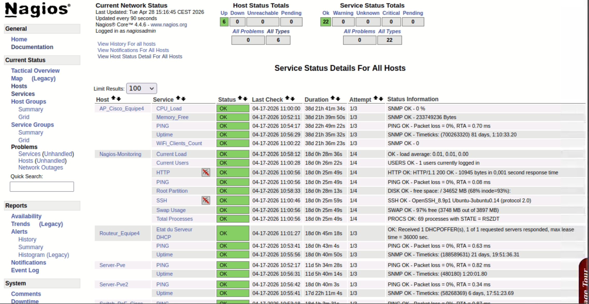
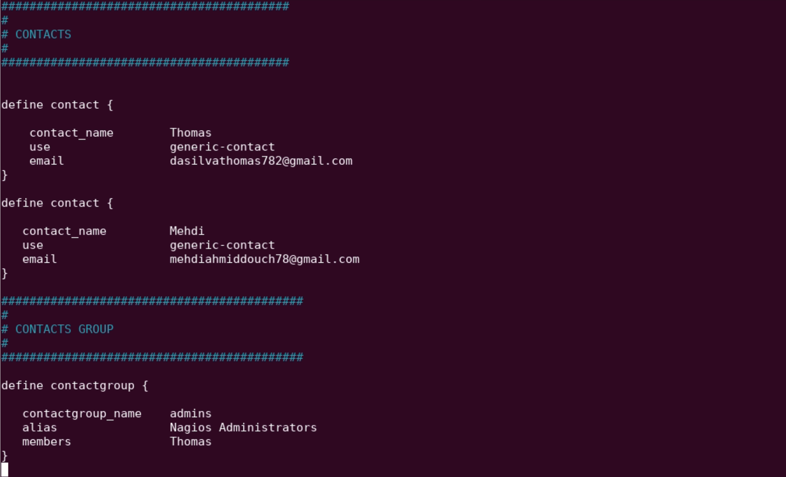

🔍 Contexte du Projet
L'objectif était de déploier un outil de supervision efficace et centralisé, afin d'avoir une visibilité optimale sur l'ensemble des équipements.
Cette mission a nécessité la configuration de fichiers de contacts et la définition de seuils critiques pour garantir la réactivité de l'équipe.

Interface de supervision temps réel💻 L'objectif ?
Le défi majeur était de lier les alertes Nagios à la boite mail de la M2L afin de garantir une communication rapide et efficace en cas d'incident.
Résultat : un gain de temps considérable permettant d'effectuer les interventions de manière plus rapide et efficace sans être constament vigilant à l'IHM Nagios.

Extrait du fichier "Contact.cfg"Livrable Technique
Consultez la procédure complète d'installation et les schémas réseau détaillés du projet.
📂 Ouvrir la Procédure (PDF)